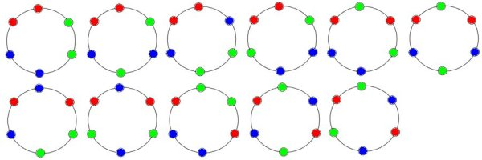

Lösung PUZZLE 28: Das Perlen-Armband
Es gibt total 92 derartige Armbänder.
Zuerst zur Farbwahl: Sind die Anzahlen der Perlen der drei Farben verschieden, so gibt es 3!=6 Möglichkeiten. Sind genau zwei der drei Anzahlen gleich, so gibt es 3 Möglichkeiten; sind alle drei Anzahlen gleich (einziger Fall (2,2,2) ), so gibt es nur eine Möglichkeit.
Einfarbige Bänder
(6,0,0): Hier gibt es keine weiteren Permutationen. Also 3 Armbänder.
Zweifarbige Bänder
(5,1,0): Hier gibt es keine weiteren Permutationen. Also 3! = 6 Armbänder.
(4,2,0): Zu jeder der 6 Möglichkeiten von der Farbwahl kommen je 3 weitere Permutationen hinzu.
Also 6*3 = 18 Armbänder.
.klein.jpg)
(3,3,0): Zu jeder der 3 Möglichkeiten von der Farbwahl kommen je 3 weitere Permutationen hinzu.
Also 3*3 = 9 Armbänder.
.klein.jpg)
Dreifarbige Bänder
(4,1,1): Zu jeder der 3 Möglichkeiten von der Farbwahl kommen je 3 weitere Permutationen hinzu.
Also 3*3 = 9 Armbänder.
.klein.jpg)
(3,2,1): Zu jeder der 6 Möglichkeiten von der Farbwahl kommen je 6 weitere Permutationen hinzu.
Also 6*6 = 36 Armbänder.
(2,2,2): Hier gibt es 11 Permutationen. Also 1*11 = 11 Armbänder.

Insgesamt gibt es daher 3 + 6 + 18 + 9 + 9 + 36 + 11 = 92 Armbänder.